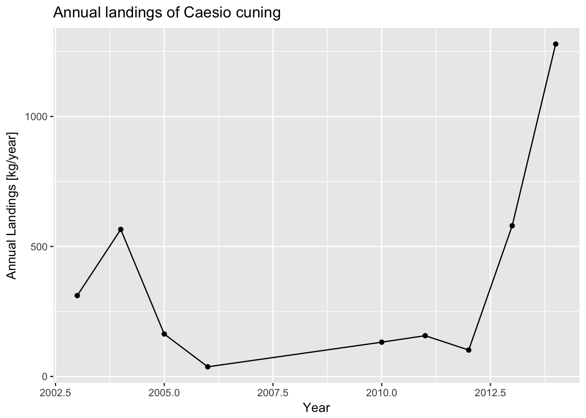
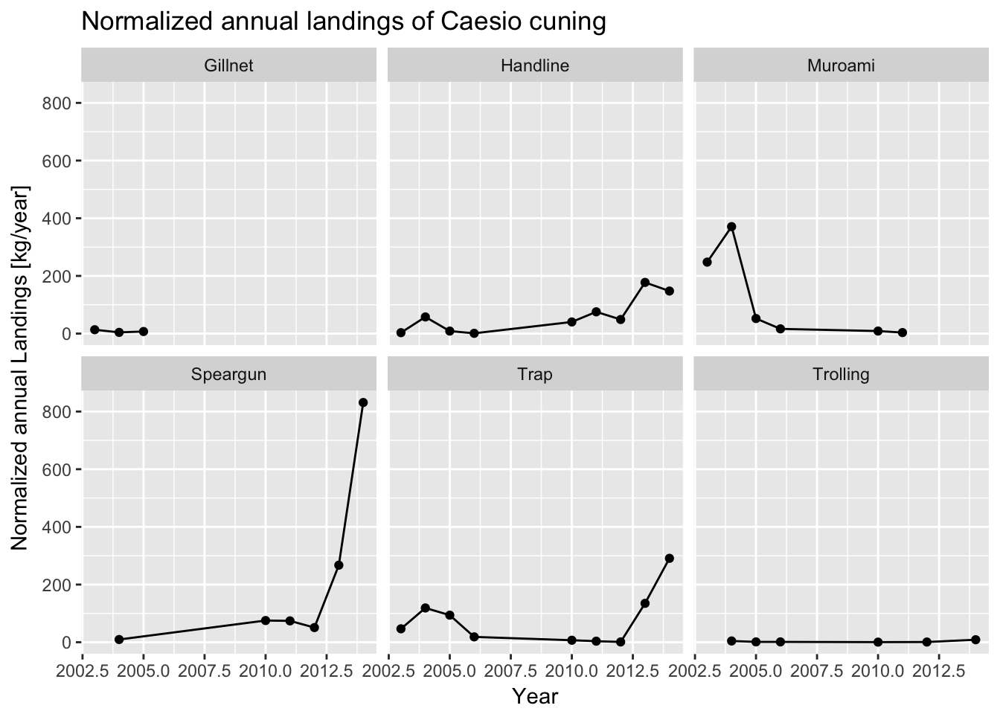

7 Plotting Fisheries Data
This short document will walk you through how to make make some basic fisheries plots. Once you’ve analyzed the data as in the previous step to create summary statistics, you can take these data frames and feed them into ggplot. When using ggplot, start with your data frame, initialize the ggplot, and then use the + operation to add additional features to the plot.
7.1 Plot landings data
Let’s plot a time series of annual landings data. We start with the annual landings data we made in the previous step, and then feed this into a ggplot. It appears landings were going down between 2004 and 2011, but have been increasing significantly since then.
## Start with the annual_landings data frame you created in the last step
annual_landings %>%
## Initialize a ggplot of annual landings versus year
ggplot(aes(x=Year,y=Annual_Landings_kg_sampling_day)) +
## Tell ggplot that the plot type should be a scatter plot
geom_point() +
## Also add a line connecting the points
geom_line() +
## Change the y-axis title
ylab("Normalized annual Landings [kg/survey day/year]") +
## Add figure title
ggtitle("Normalized annual landings of Caesio cuning") 
Again, you may be interested in looking across different gear types. To plot, we use ggplot’s faceting functionality. Doing so, it now becomes clear that the recent increase in catch seems to be concentrated in speargun and trap fishing. Meanwhile, catch from muroami, a very destructive type of gear where nets are driven into the reef, has dropped to 0 since a ban of that gear in 2012 - a good sign that mangement regulation is working.
## Start with the landings data frame
annual_gear_landings %>%
## First, group the data by year
group_by(Year,Gear) %>%
## Initialize a ggplot of annual landings versus year
ggplot(aes(x=Year,y=Annual_Landings_kg_sampling_day)) +
## Tell ggplot that the plot type should be a scatter plot
geom_point() +
## Also add a line connecting the points
geom_line() +
## Change the y-axis title
ylab("Normalized annual Landings [kg/survey day/year]") +
## Add figure title
ggtitle("Normalized annual landings of Caesio cuning") +
## This tells the figure to plot by all different gear types
facet_wrap(~Gear) 
7.2 Plot CPUE data
You may also be interested in plotting median catch-per-unit-effort (CPUE). You take your CPUE data frame made in the last step and feed it into ggplot.
CPUE appears to have increased significantly during the last years. This may be due to increasing abundance in the water, which would be a good thing, but may also be indicative of increased gear efficiency coinciding with the transition to traps and spearguns, which may be concerning.
## Start with the CPUE data frame
cpue_data %>%
## Initialize a ggplot of median CPUE versus year
ggplot(aes(x=Year,y=Median_CPUE_kg_hour)) +
## Tell ggplot that the plot type should be a scatter plot
geom_point() +
## Also add a line connecting the points
geom_line() +
## Change the y-axis title
ylab("Median CPUE [kg/hour]") +
## Add figure title
ggtitle("Median CPUE for Caesio cuning") 
7.3 Plot length data
Finally, let’s first look at the length data from the catch, which gives an indication of the size structure and health of the population. Let’s look at the length data for 2014, which is the most recent year of data available. We first filter the data to be only from 2014. We then create a histogram of the length data, which shows how many individuals of each size class were measured in the catch. On the histogram, we’ll also a vertical line to show the length at which fish mature to get a sense of how sustainable the catch is - the catch should be composed mostly of mature fish. This information comes from the life history parameter data input file.
## Start with the landings data frame
landings_data %>%
## Filter data to only look at length measurements from 2014
filter(Year == 2014) %>%
## Initialize ggplot of data using the length column
ggplot(aes(Length_cm)) +
## Tell ggplot that the plot type should be a histogram
geom_histogram() +
## Change x-axis label
xlab("Length [cm]") +
## Add figure title
ggtitle("Length histogram of Caesio cuning in the catch\nLength at 95% maturity shown as a red line.") +
## Add a red vertical line for m95, the length at which 95% of fish are mature. Any fish below this length may be immature. Use the life_history_parameter data frame to get this value.
geom_vline(aes(xintercept=life_history_parameters$m95),color="red") You might also be interested in seeing how the size composition varies by gear type. You can recreate the figure about, but separting the histograms out by gear type using ggplot’s “facet” functionality. It appears as if the size structure is about the same from each gear, although by far the most amount of fish are caught using speargun. Very few fish are caught using trolling.
## Start with the landings data frame
landings_data %>%
## Filter data to only look at length measurements from 2014
filter(Year == 2014) %>%
## Initialize ggplot of data using the length column
ggplot(aes(Length_cm)) +
## Tell ggplot that the plot type should be a histogram
geom_histogram() +
## Change x-axis label
xlab("Length [cm]") +
## Add figure title
ggtitle("Length histogram of Caesio cuning in the catch by gear type\nLength at 95% maturity shown as a red line.") +
## Add a red line form95, the length at which 95% of fish are mature. Any fish below this length may be immature. Use the life_history_parameter data frame to get this value.
geom_vline(aes(xintercept=life_history_parameters$m95),color="red") +
## This tells the figure to plot by all different gear types, known as facetting
facet_wrap(~Gear) Looking at these plots - generally increasing catch, CPUE, and a healthy size structure - indicates that the population is likely doing fairly well, and is may be recovering since the ban of muroami fishing gear in 2012.